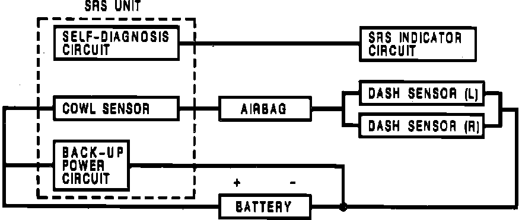

Air Bag Systems: Description and Operation
Fig. 7 Supplemental Restraint Operation:

As shown in Fig. 7, left and right dash sensors are connected in parallel. The two parallel sets of sensors are connected in series by the airbag inflator circuit and the vehicle battery. In addition, a backup power unit is connected in parallel with the vehicle battery. The backup power unit and the cowl sensors are located inside the SRS unit.
The SRS operational sequence is as follows:
1. The cowl sensor and one or both dash sensors activate.
2. Electrical energy is supplied to airbag inflator by battery, or backup power unit if battery voltage is too low.
3. Airbag deployment.
4. At least one cowl and one front sensor must be activated simultaneously for at least .015 seconds in order for airbag to be deployed.